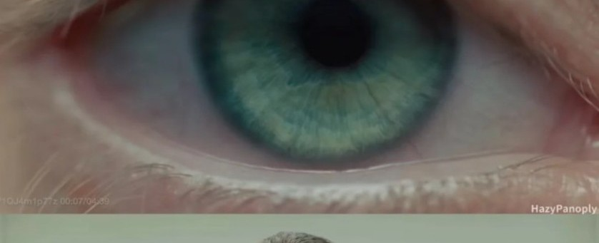
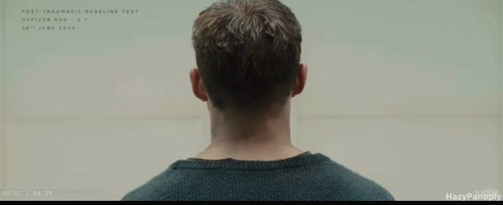

Human emotion archive
Facial expressions are treated as measurable signals.
System note
One expression may indicate multiple emotions.
One emotion may produce multiple expressions.
Anomaly detected
Subject is smiling.
Subject reports sadness.
Classification conflict.